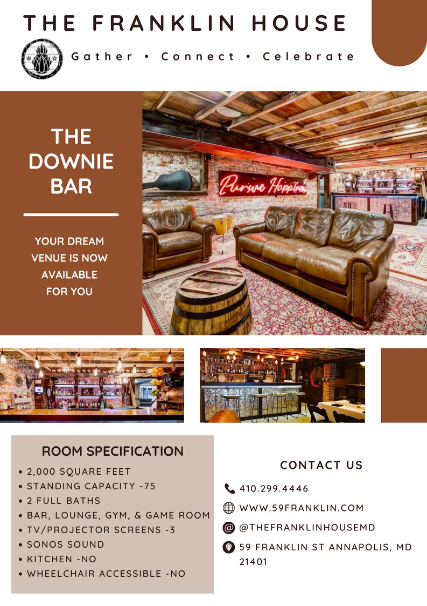

Project 1: Academic Portfolio Website
Created an academic portfolio website to showcase my academic work, creative projects, and technical assignments completed throughout my GIT program.
View my Academic Portfolio to explore my projects and assignments in detail.
Project 2: Social Media Photography
I have experience capturing and editing professional photography while helping manage social media and branding content for a hair salon. This image was used for Instagram marketing and client engagement.
Project 3: Advertising Campaign Designs

I have experience creating advertising campaign designs for various clients, including using Adobe Creative Cloud to create designs, concept development, and visual layouts for marketing materials. This design was intended for use in both print and digital advertising to promote the products and services effectively.